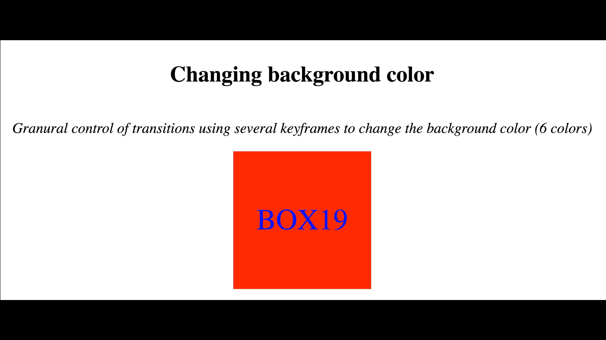
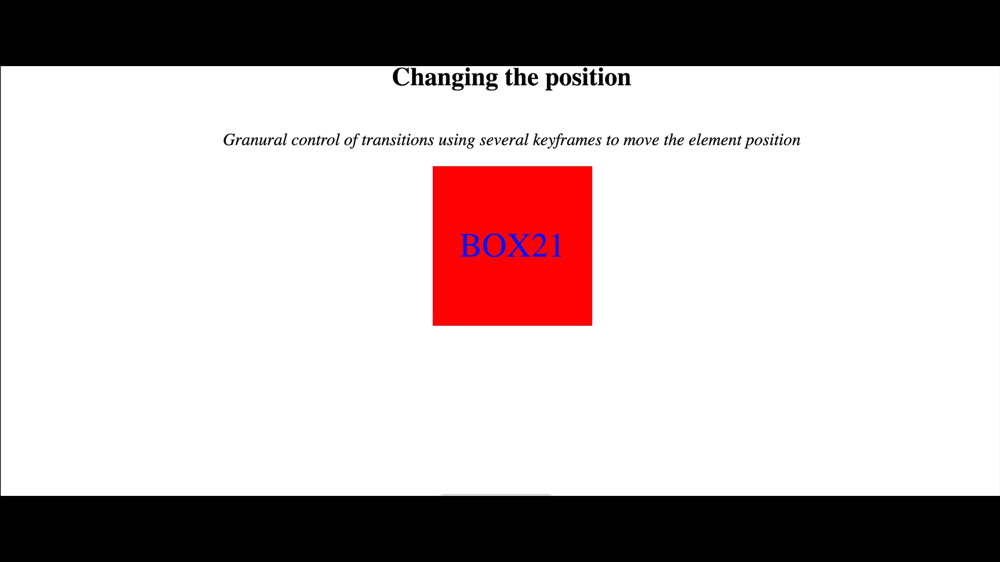
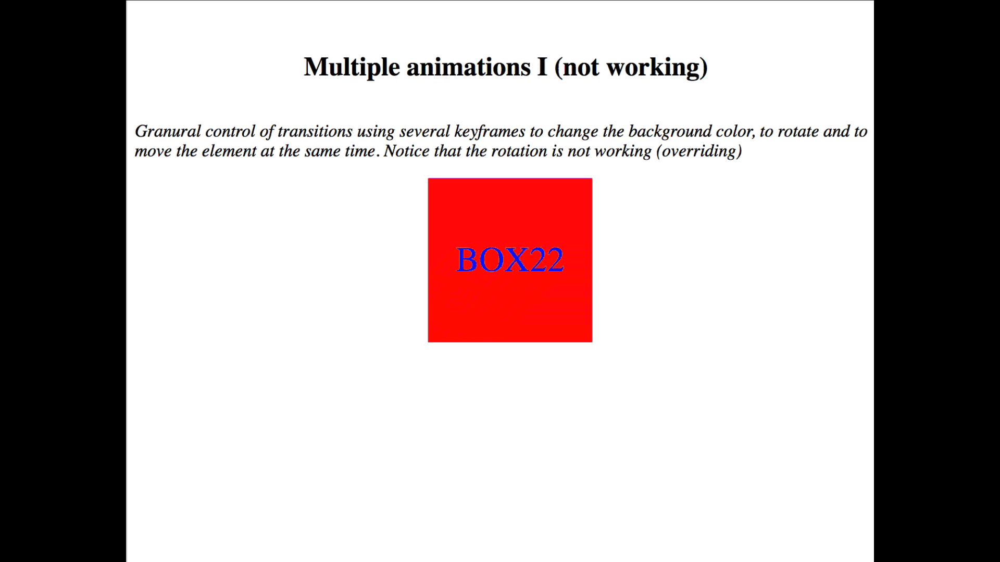
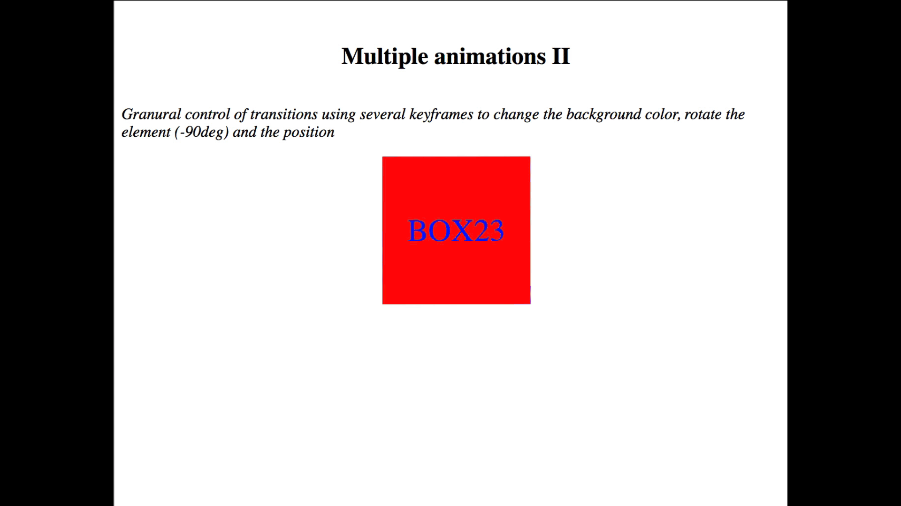

Read the following instructions and try to implement the animations shown below.
All the animation that you have to create will take 5 seconds to end, played in infinite mode and forwards
first, then backwards.
Changing background color
Granural control of transitions using several keyframes to change the background color (6 colors)
Create a div with id "box19" and class "box"
Create a keyframe animation called "background-color-animation"
The animation will change the background color of the box: red, orange, yellow, green, blue and purple
Add the animation to the element.

Smooth rotation
Granural control of transitions using several keyframes to rotate the element -90 degrees smoothly
Create a div with id "box20" and class "box"
Create a keyframe animation called "rotation-animation"
The animation will rotate the element -90 degrees
Add the animation to the element.
Changing the position
Granural control of transitions using several keyframes to move the element position
Create a div with id "box21" and class "box"
Create a keyframe animation called "translate-animation"
The animation will move the element as the following picture shows
Add the animation to the element.

Multiple animations I (not working)
Granural control of transitions using several keyframes to change the background color, to rotate and to move
the element at the same time. Notice that the rotation is not working (overriding)
Create a div with id "box22" and class "box"
Apply all the previous animations: background-color-animation, rotation-animation, translate-animation to
box22.

Multiple animations II
Granural control of transitions using several keyframes to change the background color, rotate the element
(-90deg) and the position
Create a div with id "box23" and class "box"
Create a keyframe animation called "translate-rotate-animation"
The animation will move the element as the following picture shows
Add the animation to the element.
Notice that the element rotates -22.5deg in each step of the animation

Multiple animations III
Granural control of transitions using several keyframes to change the background color, rotate the element
(-360deg) and the position
Create a div with id "box24" and class "box"
Create a keyframe animation called "translate-rotate360-animation"
The animation will move the element as the following picture shows
Add the animation to the element.
Notice that the element now rotates -360deg in each step of the animation